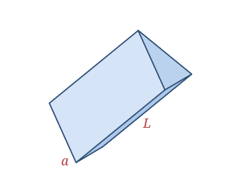

A triangular prism has two identical, parallel triangular bases connected by three rectangular faces. Slide a triangle straight through space and the solid it sweeps out is a triangular prism.
The classic example is a glass optical prism that splits white light into a rainbow; you'll also recognize the shape in Toblerone-style chocolate bars and many tent and roof profiles.
Defined by the triangular base area B, the triangle's perimeter P, and the prism length L.
| Faces | 5 (2 triangles + 3 rectangles) |
|---|---|
| Edges | 9 |
| Vertices | 6 |
| Base area | B |
| Base perimeter | P |
| Length | L |
As a polyhedron it satisfies Euler's formula: V − E + F = 6 − 9 + 5 = 2.
Volume V = B · L
Surface area SA = 2B + P · L
Equilateral base B = (√3⁄4)a², P = 3a
Take a prism whose base is an equilateral triangle with side a = 4, and length L = 10.
B = (√3⁄4)a² = (√3⁄4)(16) = 4√3 ≈ 6.93
P = 3a = 12
V = B · L = 4√3 × 10 = 40√3 ≈ 69.28
SA = 2B + P · L = 8√3 + 120 ≈ 133.86
When Isaac Newton passed sunlight through a triangular prism, he showed that white light is actually a mixture of every color — a single glass prism rewrote our understanding of light.